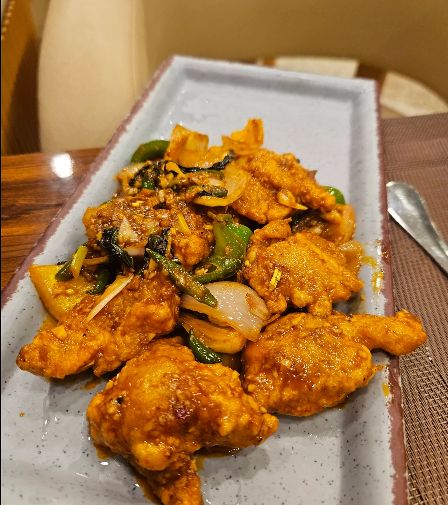
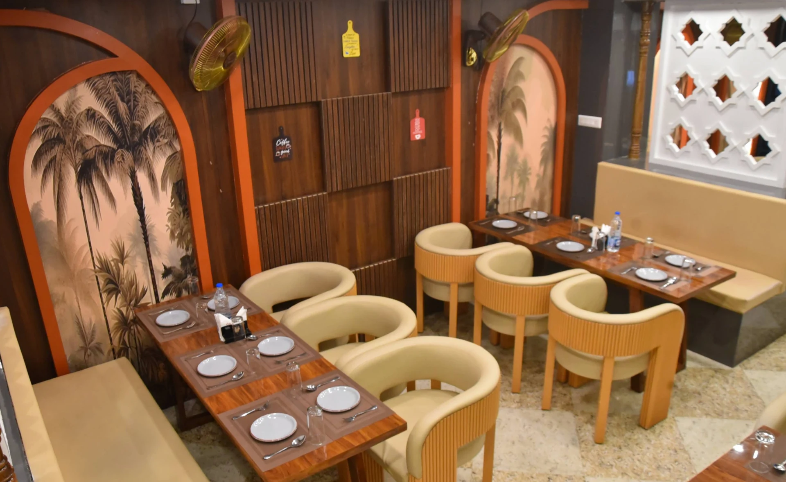
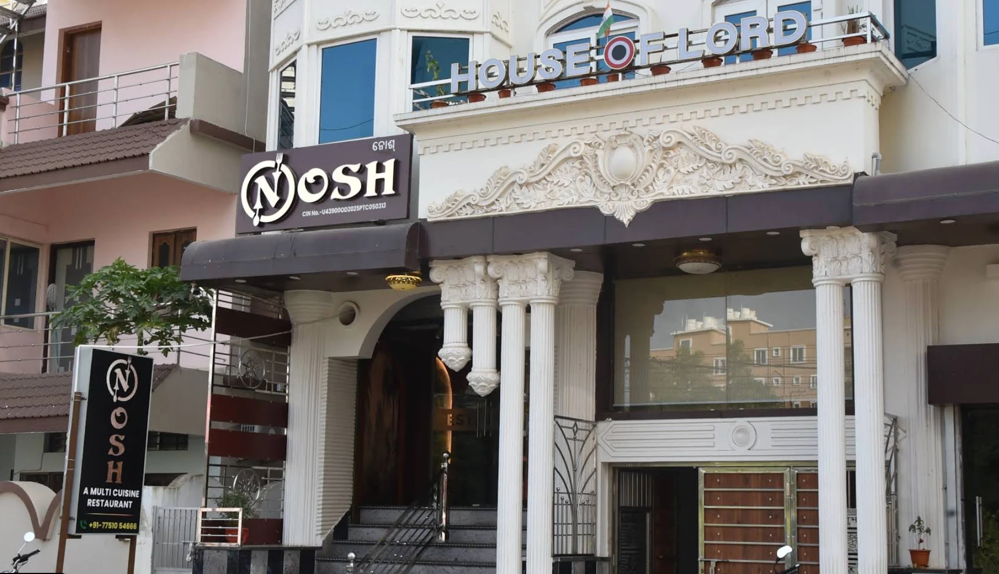

Nosh · Kalinga Nagar
Savor Every
Moment with
Every Bite.
Where every bite feels like home. Chic bites, flavour and fun in a warm dining room made for good food and easy conversations.

Dining, your way
Serving You
Better.
Nosh combines a warm dine-in atmosphere with flexible service options for guests around Kalinga Nagar.

Warm dining in Bhubaneswar
Comfortable dining
starts here.
Cream seating, walnut tables, terracotta arches and palm artwork give the restaurant its recognizable warm character.
Get directions ↗Crafted Around
Every Table
Real Nosh spaces and food, presented without stock chefs or invented team profiles.

Praise from
Our Patrons
Accurate excerpts from the review text supplied for this project.
★★★★★“Like the food. Service was good. Good ambiance.”
★★★★★“The ambience is cozy, chill, and very aesthetically pleasing—perfect for a relaxed outing.”
★★★★★“Really loved the quality of the food… Freshness of the food… Friendliness of the staff.”